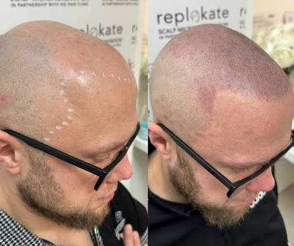
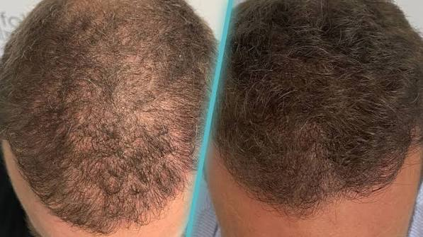
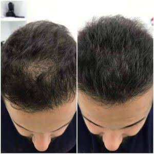

Scalp micropigmentation places tiny pigment dots in the scalp to mimic the look of hair follicles. It can create the appearance of a closely shaved head, add visual density to thinning areas or help camouflage scars. VAMA Clinics starts with a scalp assessment and a clear discussion of what SMP can and cannot do.
Discuss your hair loss concern and find out whether SMP is suitable for you.
Individual outcomes vary. Your specialist can discuss what may be realistic for your scalp.



Select the concern that sounds closest to yours. A consultation helps decide whether SMP, a hair transplant or another option suits you better.
Based on your selection, our specialists usually recommend —
Get a personalised planThe pattern of hair loss, scalp condition and your goals are reviewed before planning SMP.
Pigment shade is chosen to suit your natural hair colour and skin tone for a blended look.
The hairline and dot pattern are planned around your face shape and age for a realistic appearance.
SMP is usually done over two to three sessions so the colour and density can be built up gradually.
SMP uses fine needles, so it is performed with sterile, single-use needles in a clinical setting.
Discuss SMP at VAMA Clinics in Noida, Indirapuram, Wave City, Lajpat Nagar, Kanpur, Lucknow and Agra.
Your hair-loss pattern, scalp health and expectations are discussed, and SMP is compared with other options.
The hairline, coverage area and pigment shade are planned and agreed with you.
Fine pigment dots are placed in the scalp over usually two to three sessions spaced some days apart.
Healing guidance is shared, and touch-ups are planned as the pigment softens over the years.

At VAMA Clinics, SMP begins with a conversation about your hair loss and the look you want. Our team supports patients across locations in NCR and UP and can also discuss alternatives such as hair transplant or medical hair-loss treatment.
Hair loss can affect confidence at any age. Scalp micropigmentation (SMP) is a non-surgical cosmetic option that creates the look of hair follicles on the scalp. At VAMA Clinics, SMP is planned around your hair-loss pattern, hair colour, skin tone and expectations.
SMP is a form of cosmetic pigmentation in which very fine dots of pigment are placed in the upper layer of the scalp with a specialised device. The dots imitate the appearance of short hair or follicles. It does not grow new hair; instead, it creates a visual effect of density or a closely shaved head.
SMP is commonly considered by men and women with:
People who prefer to keep longer hair over a bald area may not get a natural result, as SMP replicates short stubble. Active scalp conditions should be treated first. A consultation helps decide whether SMP is right for you.
SMP is usually completed in two to three sessions spaced some days or weeks apart. Building colour gradually helps achieve a natural shade and even density. Each session can take a few hours depending on the area covered.
SMP is long-lasting, but the pigment gradually softens over the years. Sun exposure, oily skin and scar tissue can affect how long it holds. Touch-up sessions may be needed every few years to keep the look sharp.
For a few days after each session you may be advised to avoid washing the scalp, heavy sweating, swimming, steam and direct sun. Longer-term, using sun protection on the scalp helps the pigment last. Follow the specific aftercare advice from your treating professional.
VAMA Clinics offers SMP consultations across Noida, Indirapuram, Wave City, Lajpat Nagar, Kanpur, Lucknow and Agra. Discuss thinning, a receding hairline, baldness or scalp scars with the team at a convenient location.
Treatment suitability and results vary by individual. This information is general and does not replace a professional medical assessment.
Hair loss has different causes and patterns. We begin by understanding yours and what you want to achieve.
Hairline shape, coverage and pigment shade are planned with you, so the result suits your face and age.
Following healing advice after each session helps the pigment settle evenly.
SMP creates the look of hair, not new growth, and fades gradually. Your specialist will explain touch-ups and realistic outcomes.
No. SMP is a cosmetic pigmentation procedure that creates the appearance of hair follicles. It does not stimulate hair growth, but it can be combined with medical hair-loss treatment if recommended.
Most people describe mild discomfort or a scratching sensation. Comfort measures, such as a topical numbing cream, can be discussed with your specialist.
Usually two to three sessions spaced some days or weeks apart, depending on the area and density required.
SMP is long-lasting but softens gradually over the years. Touch-ups may be needed every few years, depending on sun exposure, skin type and aftercare.
SMP is commonly used to camouflage FUT strip scars and FUE dot scars. Scar tissue can take pigment differently, so an assessment is needed first.
Yes, you can book a free initial consultation to discuss your concern and learn about suitable next steps, with no obligation to proceed.
Book a free, no-obligation consultation with VAMA's hair specialists.